Eventos
Casamentos, batizados, aniversários e eventos de empresa. Cada proposta é feita à medida e enviada depois de conhecer a Quinta.
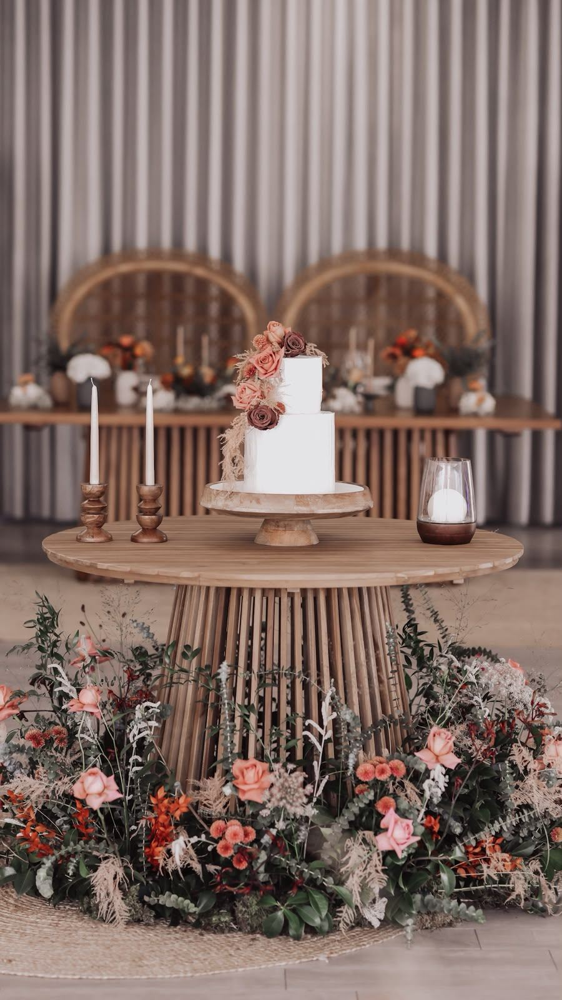
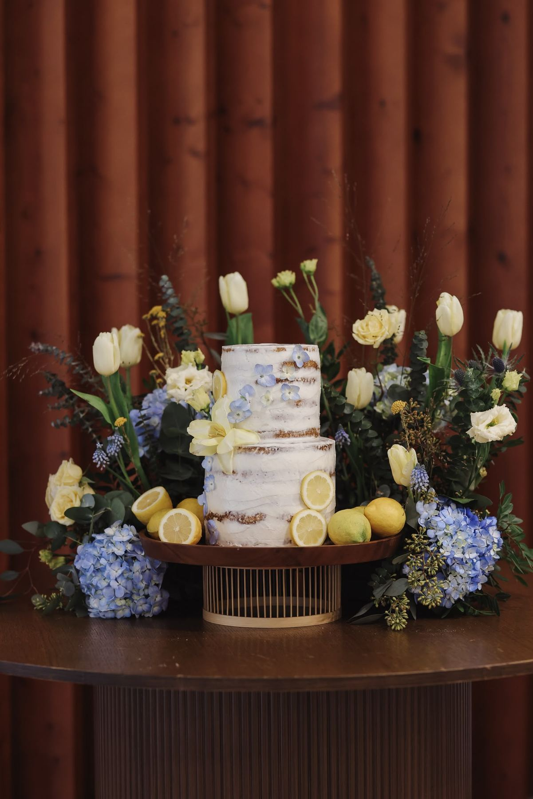
Casamentos
A cerimónia no jardim, o cocktail no lounge e o jantar no salão, sem ninguém ter de sair da Quinta. Como recebemos um evento de cada vez, o dia é inteiramente vosso.
- Cerimónia ao ar livre no relvado
- Catering próprio, com menu escolhido em conjunto
- Mesa dos noivos, mesa do bolo e flores ao vosso estilo
- Até 500 convidados
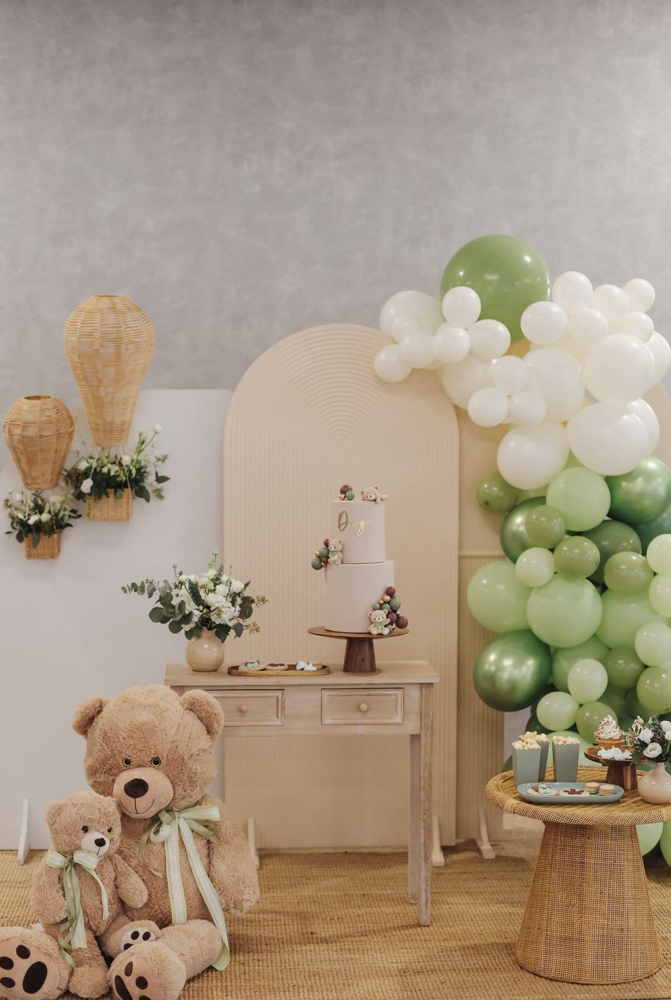
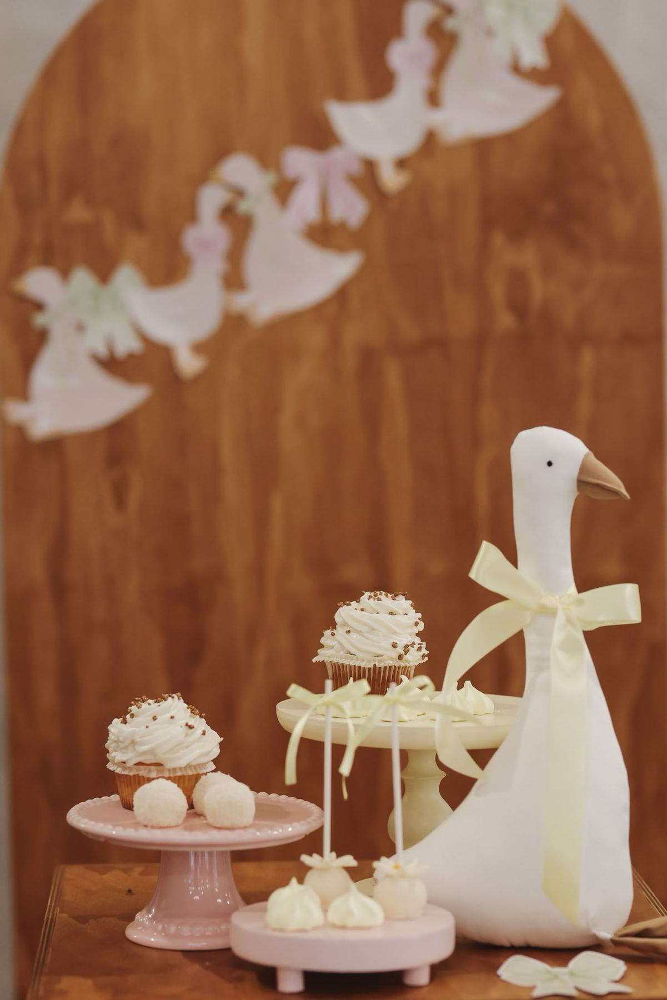
Batizados
Um dia calmo para a família, com jardim para as crianças brincarem e uma mesa de doces de que ninguém se esquece.
- Almoço ou lanche
- Bolo, mesa de doces e decoração temática
- Jardim para os mais pequenos
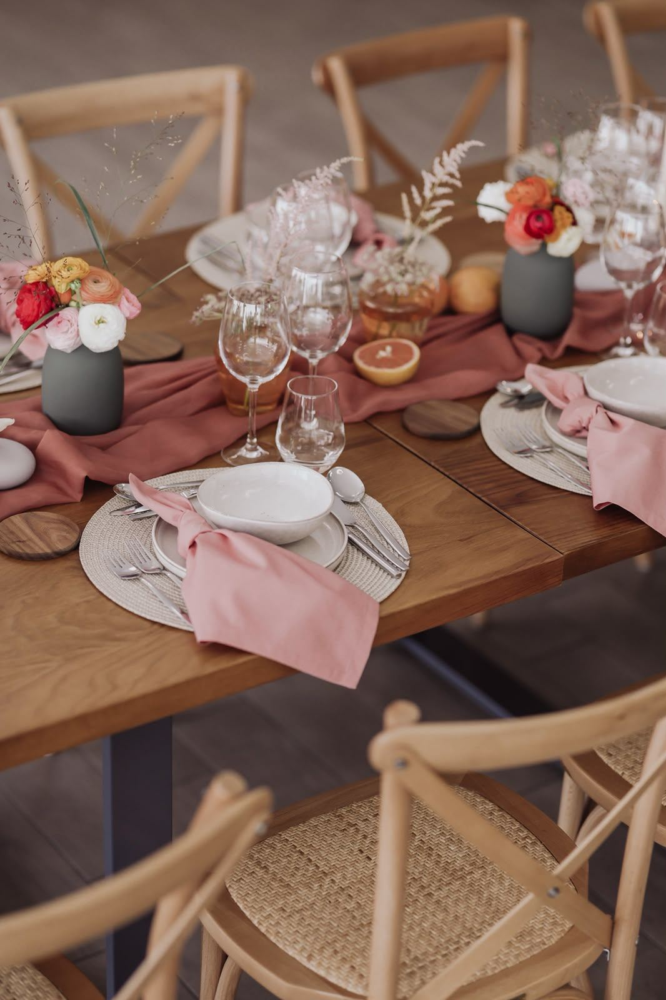
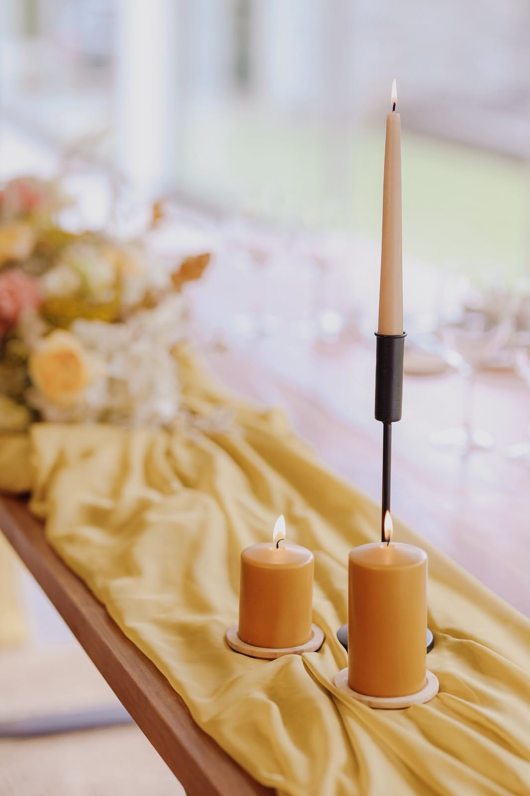
Aniversários
Dos 18 aos 80, mesas cheias de cor e um espaço que se transforma conforme a festa.
- Almoços e jantares de família
- Decoração ao tema que escolher
- Música e animação a combinar
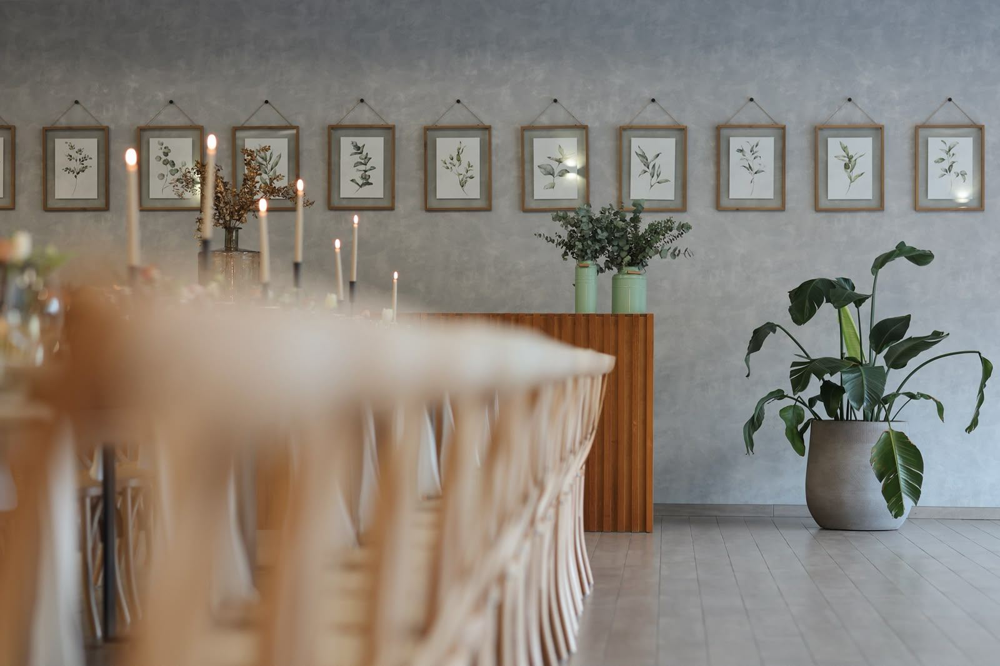
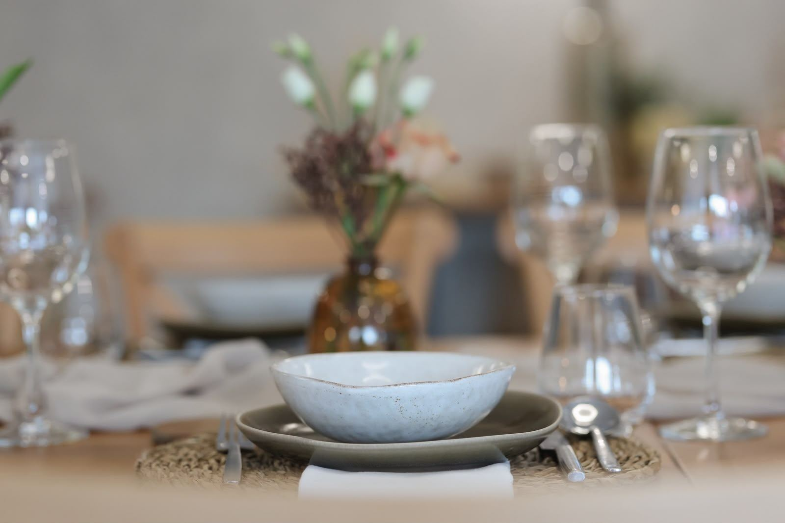
Eventos de empresa
Jantares de Natal, encontros de equipa, lançamentos e festas de fim de ano, num espaço exclusivo para a sua empresa.
- Mesas imperiais até 500 pessoas
- Catering próprio
- A Quinta inteira para a sua equipa
Réveillon 2027
Passe a última noite do ano na Quinta: jantar à mesa, música e a casa toda vestida para a época. Peça o programa e reserve o seu lugar pelo WhatsApp.
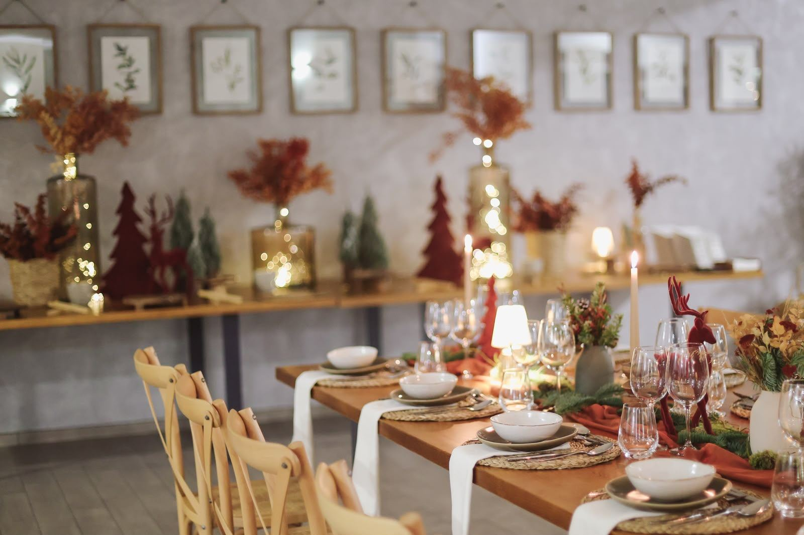
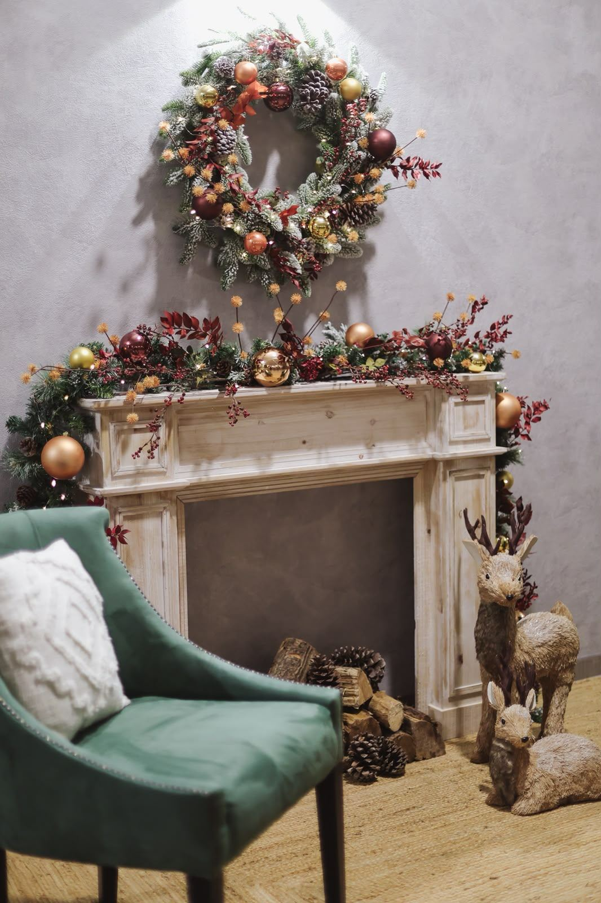
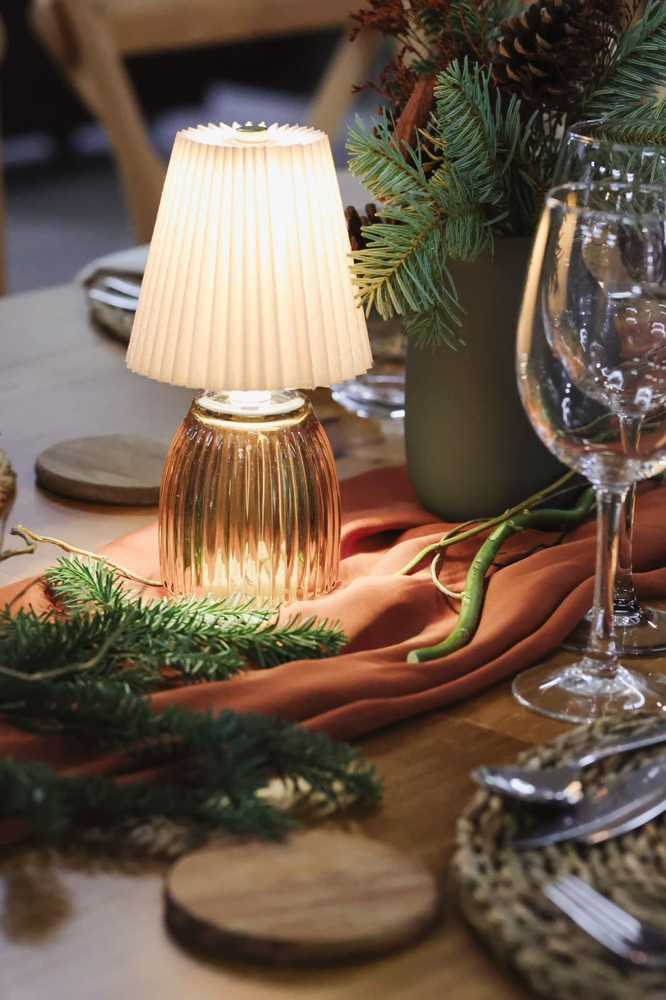